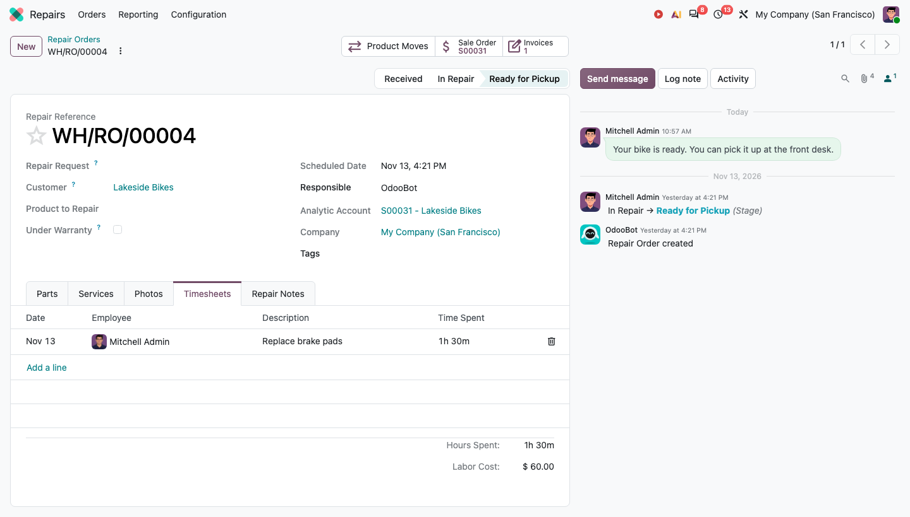
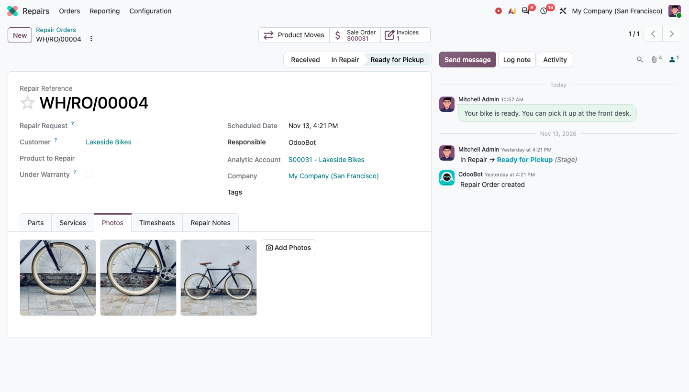
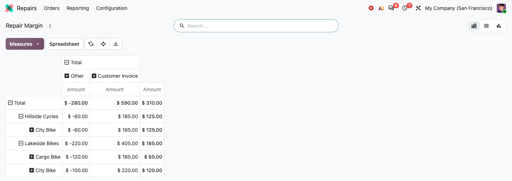

What you get
- Repairs from sale orders. Confirming a sale order with a repair product creates the repair. This is standard Odoo; the module builds on it.
- One analytic account per sale order. Invoiced revenue, labor from timesheets logged on the repair and the cost of the parts used on the repair are posted to it. The account is shown on the sale order and on the repair.
- Gross Margin button on the sale order. Shows the balance of the order's analytic account. Clicking it lists the revenue and cost lines, grouped by category.
- Timesheets tab on the repair. Technicians log their time on the repair. The tab shows the hours spent and the labor cost, based on each employee's hourly cost.
- Repair stages. Received, In Repair and Ready for Pickup by default, editable under Repairs > Configuration > Stages. Stage changes are logged in the chatter and the kanban view is grouped by stage. Ending a repair moves it to Ready for Pickup, and moving a repair to Ready for Pickup ends it.
- Photos tab on the repair. Several photos per repair, for example at intake and when finished. On a phone or tablet the Add Photos button opens the camera. Click a photo to see it full size.
- Customer portal. Customers see their own repairs under My Account, with the stage, the sale order, the scheduled date and a message thread with your team. Costs, timesheets, internal notes and photos are not shown.
- Receiving and returning customer items. Validating a receipt that has the customer as owner assigns the received items, with their serial numbers, to that customer's open repairs from sale orders that have no product yet, oldest repair first and in the order of the receipt lines. When a repair is ended, its item is added to a return delivery of that receipt, so finished items of one drop-off ship together. The delivery is not validated automatically.
- Repair Margin report under Repairs > Reporting: revenue, labor and parts per customer and per repaired product.
Screenshots
Repair with its timesheets: hours and labor cost, and the analytic account of the sale order.

Repair photos: thumbnails that open full size.

Gross margin of a sale order: invoiced revenue, parts and labor on one account.

Repair Margin report: revenue and costs per customer and repaired product.

Repairs by stage.

The customer's repair page in the portal.

Setup
- Turn on Analytic Accounting in the Accounting settings to see the analytic account, the Gross Margin button and the Repair Margin report.
- Set an Hourly Cost on the employees who log time on repairs. Without it, labor is posted at zero.
- On the product you sell for repairs: product type Service, Create on Order set to Repair Order.
- To receive customer items: turn on Storage Locations, Lots & Serial Numbers and Consignment in the Inventory settings. Create a location for items in repair and an incoming operation type with the Customers location as source, that location as destination, and Delivery Orders as the operation type for returns. On the Repairs operation type, set the product source and destination location to the same location. On each receipt, set Assign Owner to the customer, so the items stay the customer's stock and are not valued.
- Sell one repair line per item. Each line creates one repair.
- Give the people who log time on repairs a Timesheets access right. The Timesheets tab is hidden from other users.
Limits
- Items are matched to repairs by order only (oldest repair, first receipt line). Check the repairs after the receipt if the items of one customer need different work. Items received before the sale order is confirmed are not assigned; set them on the repair by hand.
- The standard repair move of the item itself is recorded without an owner. Ownership stays correct as long as the product source and destination location of the Repairs operation type are the same location, as in the setup above.
- A repair created from a sale order has no repaired product until someone sets it on the repair or a receipt assigns one. Until then its lines show no repaired product in the Repair Margin report.
- The Repair Margin report contains the invoice lines of sale orders with repairs and the timesheet and part lines of repairs. Costs posted by hand to an order's analytic account appear in its Gross Margin but not in the report.
- With perpetual valuation, the invoice also posts its cost of goods sold lines to the order's analytic account: one on the expense account and one on the stock account, which cancel out. The margin totals stay correct, but the report shows these two extra lines.
Requirements
- Odoo 20, Community or Enterprise.
- Depends only on standard modules: Repairs, Timesheets and Project Stock Account. Sales, Inventory and Invoicing are installed through them.